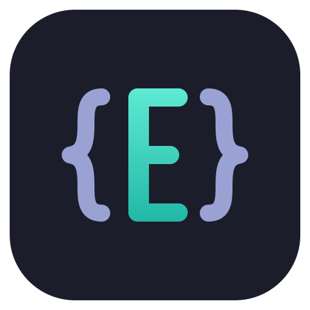

Welcome page
The page shown when there is no session to restore, and the answer to “what do I do now?”. The text rules are in
Editora’s ui/WelcomeText.java and the strings under welcome.*.
Rules on this page 11
| ID | Level | Rule |
|---|---|---|
| Rules | ||
| WELC-01 | SHOULD | An app that opens files or projects in tabs shows a Welcome page when there is no session
to restore.
|
| WELC-02 | SHOULD | An app whose window is its content, and can start with nothing in it (a list with no
items, a viewer with nothing open), shows its own empty state in place of a Welcome page (WELC-01),
with the same ingredients: the ways in, each with its chord.
|
| Behavior | ||
| WELC-03 | SHOULD | The Welcome page is shown at startup when there is no session to restore (so always with
--no-session), by the view.welcome command (Help → Welcome Page where the app has a Help menu, in the place
DOCS-07 gives it), and when a switch to another project leaves the tab strip
empty (Editora’s project swap). In an app that can start straight into one view, as Editora does for a
standalone diff, that startup suppresses the page while its worker reads the files.
|
| WELC-04 | SHOULD | Closing the last tab does not bring the Welcome page back. The empty content area shows its
own quiet hint instead: the app’s ways in, each with its chord (in Editora: Open File, Open Folder, Command Palette
and Welcome Page), and takes focus so chords still reach the window.
|
| WELC-05 | SHOULD | The page is rebuilt on every show, so the recents, the Projects and Git toggles, the keymap and
the theme are current. A refresh keeps the focus where it was.
|
| WELC-06 | SHOULD | The recent lists offer no file that no longer exists and no project whose root is gone. Remote
files are kept unchecked.
|
| WELC-07 | SHOULD | Remove from recent files asks first, through the caller, then refreshes the page.
|
| WELC-08 | SHOULD | The digits 1 to 9 open the numbered entries: typed characters only, with no modifier, so chords
and Enter are untouched.
|
| WELC-09 | SHOULD | In an app with saved remote sites, they appear as their own section; a click opens the
connection form prefilled. The section is hidden when there are none.
|
| WELC-10 | SHOULD | The Welcome page’s Customize links run the commands that pick the keymap and the app
theme (Editora’s are keymap.select and theme.setAppTheme); a change made there re-renders the page, chords
included.
|
| WELC-11 | SHOULD | The Welcome tab is not a document: its menu is Close only, with no Save, Rename or Pin, and the
title bar shows the app or project name, not a file.
|
- WELC-01 SHOULD An app that opens files or projects in tabs shows a Welcome page when there is no session
to restore.
- Check (code): startup with nothing restored opens the Welcome page.
- Reference: Editora
ui/WelcomePane.java,MainController.addWelcomeTab.
- WELC-02 SHOULD An app whose window is its content, and can start with nothing in it (a list with no
items, a viewer with nothing open), shows its own empty state in place of a Welcome page (WELC-01),
with the same ingredients: the ways in, each with its chord.
- Check (by hand): start the app with nothing in it and read the empty state’s keys. An app that always opens into content (a terminal with its shell, a radio, a monitor) has no empty state to judge.
- Reference: Torrenta
ui/Welcome.java; Miradaui/ViewerWindow.java(offerToOpen,viewer.emptyHint); both are described under In the apps.
Anatomy
Section titled “Anatomy”
- 1Identity. The app icon at 64 px beside the name (2.4 em, bold) and the README's one-line tagline, muted. One centered column, at most 640 px wide and never narrower than 340; a longer window scrolls.
- 2Start actions, each an existing command: New File, Open File, Open Folder as a Project (only with Projects on), Clone Git Repository (only with Git on), and the Command Palette always last, the gateway to everything else. Accent links with no box; the icon sits in a 26 px column so every label starts at the same x, and the whole row answers a click.
- 3Chord, right-aligned past a 32 px gap, in the keyboard color, from the active keymap. Unbound: no chord. Open File shows find-file's chord in the Emacs keymap, where that is the key to learn. The hovered row tints and the chord becomes a chip.
- 4Entry number. The first nine recent entries, projects first, are numbered in the keyboard color; typing that digit opens the entry. Projects come in the order of their most recent file.
- 5Recent file row. The name keeps its width; a chip names the project (or the host of a remote file); the folder is muted, relative to the project root, with
~for home, and elides from its start so the part that differs stays visible. The full path is the row's tooltip; right-click offers Copy Path and Remove from recent files. - 6Disclosure. Five rows per list; the rest wait behind "Show N more", which becomes "Show fewer".
- 7Customize. The active keymap and app theme by name; each link runs the picker command. Under an Emacs-style keymap a caption explains the notation. On a first run, with nothing recent, this block moves up under Start.
- 8Help and footer. Documentation, What's New (the release notes) and the Doctor. Then the version, the home page and the license; a dev build adds its commit on its own line once the lookup, which runs
gitoff the FX thread, has answered.
| Property | Value | Reference |
|---|---|---|
| Kind | A real tab content in its own closeable “Welcome” tab, so the tab strip handles switching and closing; not an overlay | WelcomePane implements TabContent, MainController.addWelcomeTab |
| Column | 640 px max, 340 px min, 48 px margin, centered in a scroll pane; below the minimum the page scrolls sideways | COLUMN_WIDTH, MIN_COLUMN_WIDTH, MARGIN |
| Zoom | Every px size is multiplied by the text zoom and the fonts are em, so zoom scales the layout, not only the words | setFontScale, .welcome-* |
| Surface | -color-bg-default, the UI surface, not the editor’s; its tab takes the same fill | .welcome-pane, .ui-surface-tab |
| Header | Icon 64 px; title 2.4 em bold; tagline -color-fg-muted | .welcome-title, .welcome-caption |
| Section heading | 1.15 em bold, padding 28 0 8 0 | .welcome-section |
| Links | Hyperlink in -color-accent-fg, no border, underlined only on hover or keyboard focus; visited stays the accent | .welcome-action, .welcome-link |
| Action row | Icon column 26 px, gap 12 to the label, at least 32 px to the chord; hover fills -color-bg-subtle with 6 px radius, insets 8 px past the row | WelcomePane.action, .welcome-action-row |
| Chord | -state-key, 0.9 em; on hover a -state-key-bg chip, radius 4 | .welcome-key |
| Recent row | Number -state-key 0.8 em; folder -color-fg-muted 0.9 em with a leading ellipsis; project chip muted on -color-bg-subtle, radius 3 | .welcome-entry-number, .welcome-recent-dir, .recent-project-name |
| Lists | 5 rows, then a flat disclosure button | COLLAPSED_RECENT_LIMIT, addCollapsed |
| Focus | The first recent entry, or New File when there is none, with no focus ring; Enter and Space open it | requestFocus, focusPage |
Behavior
Section titled “Behavior”Applies to: an app with a Welcome page (WELC-01).
- WELC-03 SHOULD The Welcome page is shown at startup when there is no session to restore (so always with
--no-session), by theview.welcomecommand (Help → Welcome Page where the app has a Help menu, in the place DOCS-07 gives it), and when a switch to another project leaves the tab strip empty (Editora’s project swap). In an app that can start straight into one view, as Editora does for a standalone diff, that startup suppresses the page while its worker reads the files.- Check (code): those three paths open the one Welcome tab, and where the app has a Help menu, a row inside it
runs
view.welcome; a startup that goes straight to a view holds a flag that skips the page. - Reference: Editora
MainController.addWelcomeTab,showWelcomeIfNoTabs;WindowSessionCoordinator(suppressWelcome). Editora’s menu row is in View, not in Help yet (MenuBarModel). The app template shows the page when there is no session to restore (ui/DocumentTabs.java), registersview.welcome(ui/Commands.java) and lists it in the Help menu (ui/AppMenus.java;SessionAndWelcomeFxTest,theWelcomePageIsInHelpClosesAloneAndIsRebuiltWhenShown); it has no project swap and no view to start straight into.
- Check (code): those three paths open the one Welcome tab, and where the app has a Help menu, a row inside it
runs
- WELC-04 SHOULD Closing the last tab does not bring the Welcome page back. The empty content area shows its
own quiet hint instead: the app’s ways in, each with its chord (in Editora: Open File, Open Folder, Command Palette
and Welcome Page), and takes focus so chords still reach the window.
- Check (code): closing the last tab shows the hint in the empty content area, not the Welcome page, and gives it the focus; opening a tab hides it. A test that asserts it is the surest evidence.
- Reference: Editora
ui/EditorEmptyState.java,EditorEmptyStateFxTest; the app template’sui/DocumentTabs.java(emptyHint, which lists its ways in with their chords and takes focus when the last tab closes).
- WELC-05 SHOULD The page is rebuilt on every show, so the recents, the Projects and Git toggles, the keymap and
the theme are current. A refresh keeps the focus where it was.
- Check (code): showing the page calls
refresh, which re-requests focus when the page had it. - Reference: Editora
WelcomePane.refresh; the app template’srefreshWelcome(ui/MainWindow.java), run on every show (SessionAndWelcomeFxTest,theWelcomePageIsInHelpClosesAloneAndIsRebuiltWhenShown).
- Check (code): showing the page calls
- WELC-06 SHOULD The recent lists offer no file that no longer exists and no project whose root is gone. Remote
files are kept unchecked.
- Check (code): the recent files pass through the same filter as the toolbar’s dropdown; projects are kept only when their root is a directory.
- Reference: Editora
RecentFiles.showable,WelcomePane.
- WELC-07 SHOULD Remove from recent files asks first, through the caller, then refreshes the page.
- Check (code): the remover the page is given shows a confirmation before it removes the entry.
- Reference: Editora
WelcomePane.setRecentRemover;MainController(dialog.removeRecent.*).
- WELC-08 SHOULD The digits 1 to 9 open the numbered entries: typed characters only, with no modifier, so chords
and Enter are untouched.
- Check (code): the digit handler is on
KEY_TYPEDand ignores Ctrl, Alt and Meta. - Reference: Editora
WelcomePane.onKeyTyped.
- Check (code): the digit handler is on
- WELC-09 SHOULD In an app with saved remote sites, they appear as their own section; a click opens the
connection form prefilled. The section is hidden when there are none.
- Check (code): the page adds a Remote Sites section only when the saved-sites list is not empty.
- Reference: Editora
WelcomePane(remoteSites,welcome.remote).
- WELC-10 SHOULD The Welcome page’s Customize links run the commands that pick the keymap and the app
theme (Editora’s are
keymap.selectandtheme.setAppTheme); a change made there re-renders the page, chords included.- Check (code): the two Customize links run the app’s keymap and theme picker commands through the registry, and applying a keymap or a theme refreshes the Welcome page.
- Reference: Editora
WelcomePane(customizeRow), refreshed bySettingsReapply.
- WELC-11 SHOULD The Welcome tab is not a document: its menu is Close only, with no Save, Rename or Pin, and the
title bar shows the app or project name, not a file.
- Check (code): the Welcome tab’s context menu holds one Close item.
- Reference: Editora
MainController.addWelcomeTab; the app template’sui/DocumentTabs.java, whose Welcome tab’s menu holdsbuffer.closealone, is not pinned, and leaves the title to the project and the app.
| Key | English |
|---|---|
welcome.tab | Welcome |
welcome.tagline | A keyboard-driven programmer’s editor |
welcome.start | Start |
welcome.newFile / welcome.openFile | New File / Open File… |
welcome.openFolder / welcome.clone | Open Folder as a Project… / Clone Git Repository… |
welcome.recentProjects / welcome.recentFiles / welcome.remote | Recent Projects / Recent Files / Remote Sites |
welcome.noRecent | No recent files yet. Open a file or a folder to start, or run editora FILE in a terminal. |
welcome.recent.showMore / welcome.recent.showFewer | Show {0} more / Show fewer |
welcome.entryNumber | Press {0} to open (accessible help) |
welcome.customize / welcome.keymap / welcome.theme | Customize / Keymap / Theme |
welcome.notation.emacs | Chords use Emacs notation: C- is Ctrl, M- is Alt, S- is Shift. Pick another keymap above to see your platform’s notation. |
welcome.help / welcome.documentation / welcome.whatsNew / welcome.doctor | Help / Documentation / What’s New / Doctor: Check External Tools |
welcome.version | Version {0} |
welcome.page | Welcome Page (the row in the empty editor’s hint, WELC-04; the menu row takes the command’s title, command.view.welcome) |
In the apps
Section titled “In the apps”
Torrenta has no documents to come back to, so its welcome is an empty state over the table until the first
torrent (ui/Welcome.java, bound to the list being empty): a drop zone that says “Drop a .torrent, a magnet or a
link anywhere”, the four keys that matter with their chords (open a .torrent file, add what is on the clipboard,
filter or run a command, Settings), the clipboard’s magnet or link offered with an Add it button when there is
one, and where downloads go with a change link. Nothing on it takes focus: the keys are the way in. Mirada, with
no folder open, shows an empty state too (offerToOpen in ui/ViewerWindow.java): a hint that names the Open
command’s chord (“Open an image with {0}, or drop one here”), buttons for the Open Image… and Open Folder… commands
and a Documentation link. Termina, Modula and nux open straight into their content and have neither.
Pauta 6.0.1 · · Changelog · This page in the latest edition